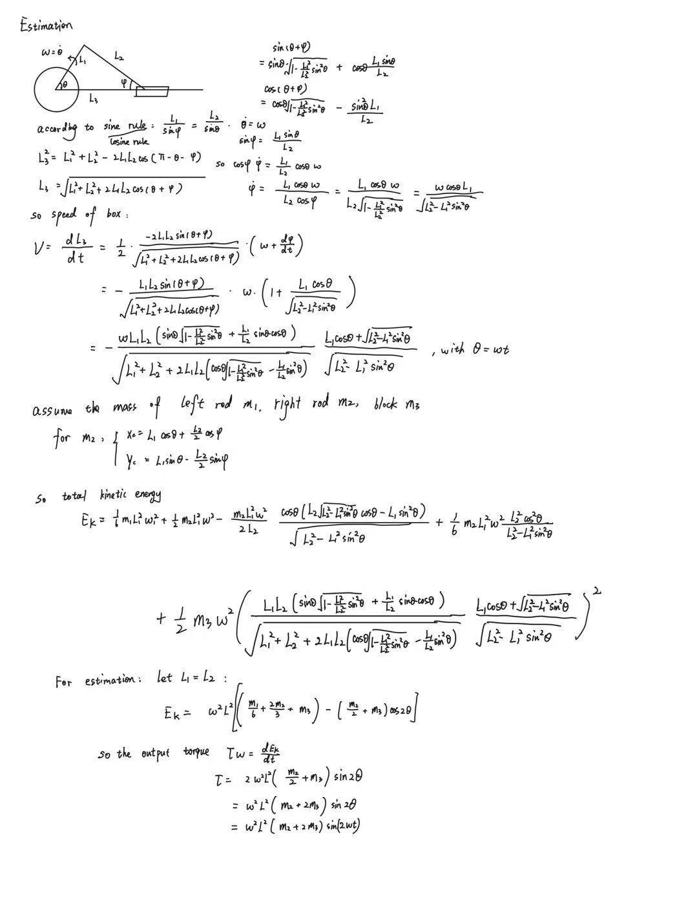

Project Concept
For this kinetic‑sculpture assignment, I built a crank‑slider piston‑style mechanism. It replicates the working principle of a cylinder‑piston system. Two hinged linkage arms are connected by a custom‑designed pivot bolt. The sliding block is constrained to only move horizontally inside a fixed outer frame. A DC‑motor‑driven crank will spin the linkage, which pushes the inner block to slide repeatedly back and forth.

My Fusion‑360 assembly of the linkage, sliding block and outer frame for the piston kinetic sculpture.

Custom‑made threaded bolt, which acts as the pivot pin to connect the two linkage arms at the hinge joint.
Theoretical Torque Derivation
I derived the time-dependent function of the motor output torque for this crank-slider system, analyzing the varying load force on the motor shaft as the piston reciprocates horizontally. The mathematical derivation and force-torque equations are shown below.

Derivation sheet for time-varying motor torque in the crank-slider piston mechanism.
Manufacturing & Assembly Plan
- Cut the acrylic frame, sliding block and linkage arms at the saw station; smooth edges using hand files and the bench grinder.
- Drill mounting holes on each component and tap threads for the pivot bolt at the drill station.
- Mount the motor, attach it to the linkage crank, then test the full horizontal piston‑style motion.
Final Working Demonstration
This YouTube short shows the fully assembled kinetic sculpture running. The crank-slider piston reciprocates horizontally as the DC motor drives the linkage system.
Full working demonstration short of my crank-slider piston kinetic sculpture hosted on YouTube.
Documentation Plan
I have embedded a YouTube short demonstration of the finished mechanical sculpture on this page to document the complete project workflow, from CAD design and theoretical analysis to physical fabrication and functional testing.